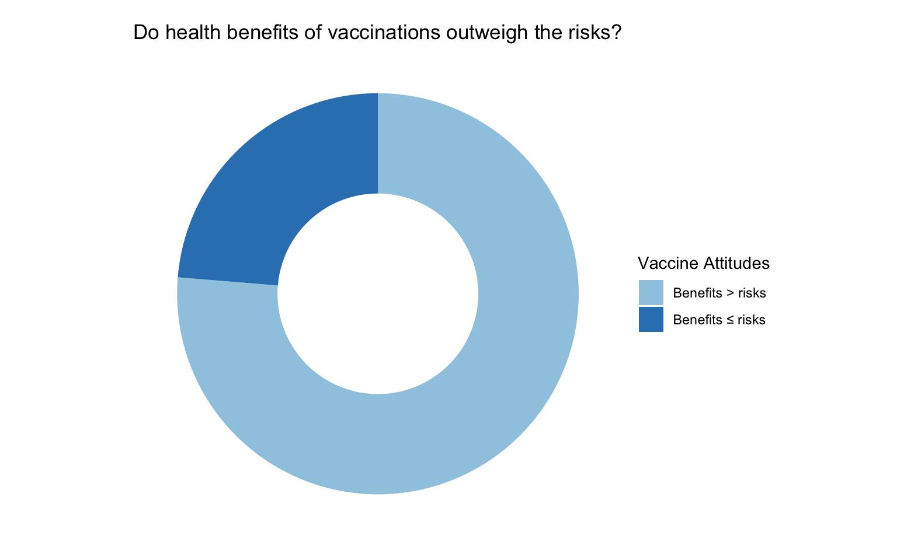
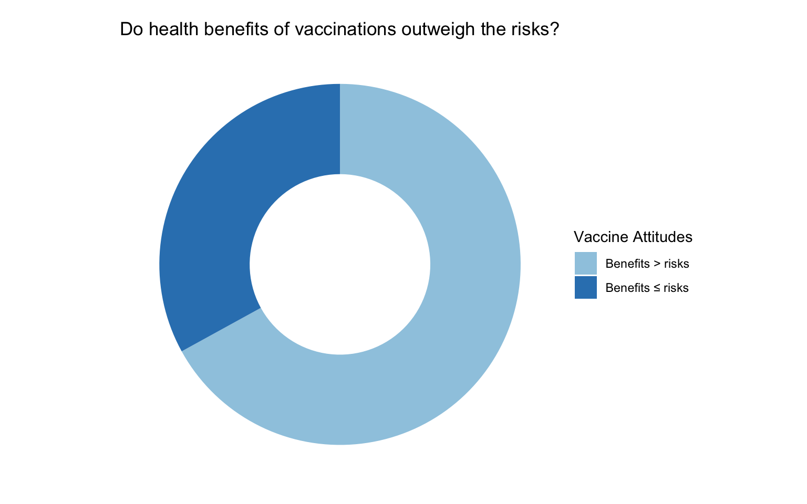
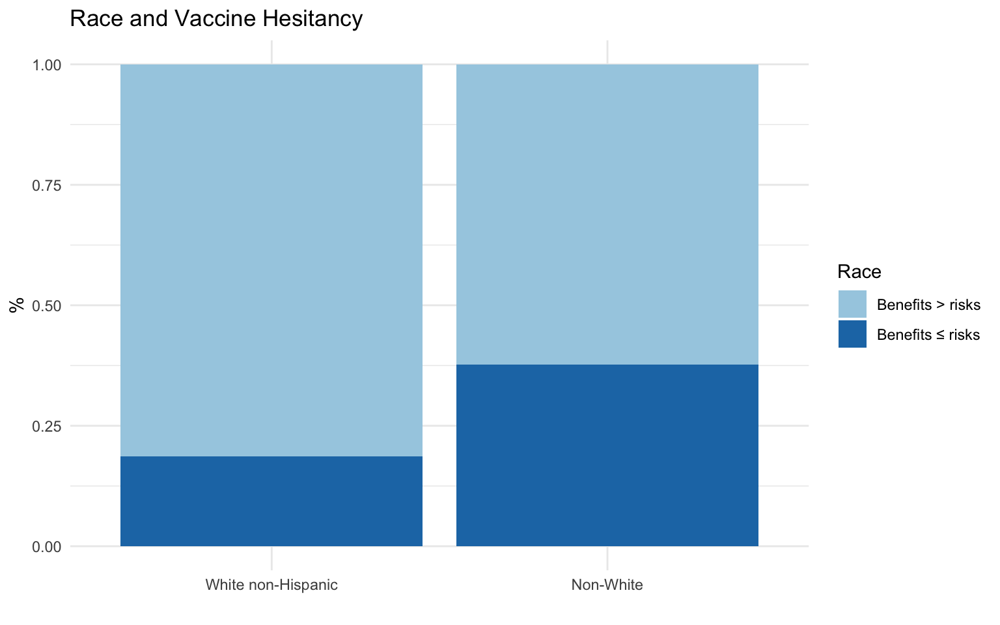
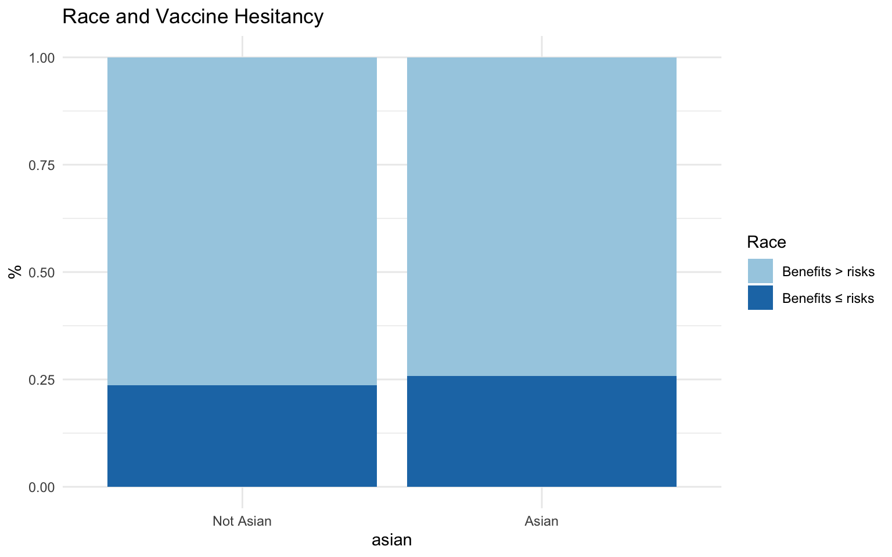
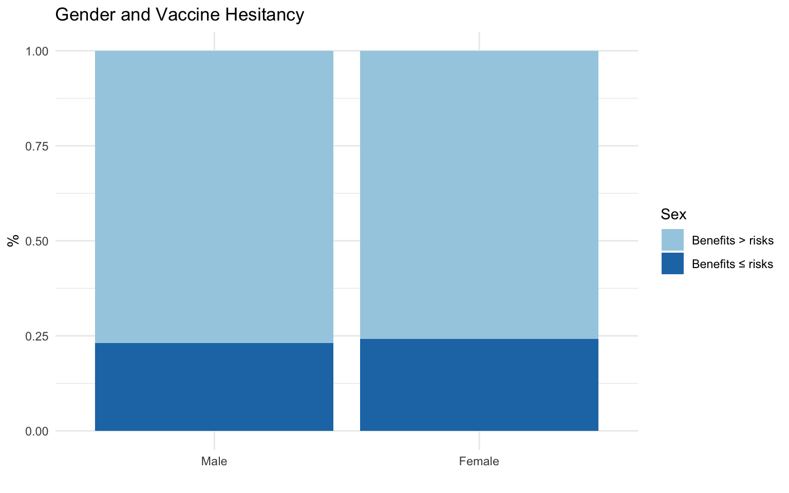
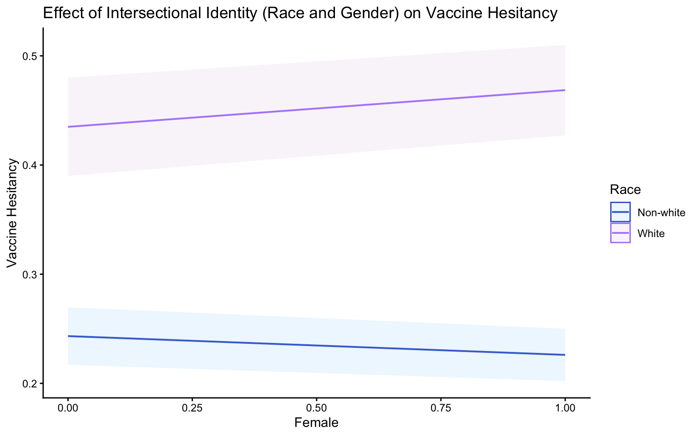
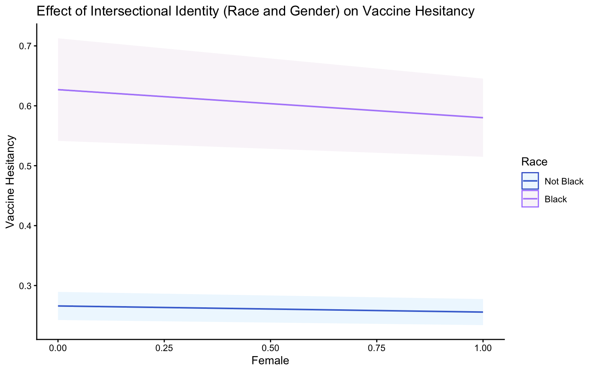
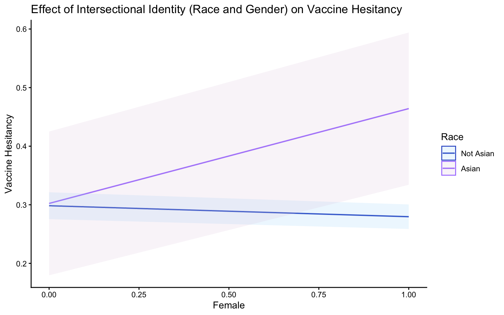

Why did vaccine attitudes change between 2020-2024 for some people, but not others?

The United States has one of the highest rates of vaccine skepticism (Sallam 2021). As of October 2022, about 2.5 years after the initial outbreak broke out in the US, only 68% of Americans had received a full vaccination course, and only ⅓ had received a booster shot. From 2020 to 2024, the percentage of Americans who believed that the health benefits of vaccines did not outweigh the costs increased from 24% to 33% (ANES).


An estimated 154 million lives have been saved by vaccinations in the last 50 years (WHO 2024). This trend of decreasing support for vaccinations could have drastic consequences on public health. The longer it takes to control the spread of an illness, the more time it has to mutate, creating mutations of the virus that are possibly more deadly or vaccine-resistant.
Why look at Intersectionality?Discrimination against racial minorities and women is widespread within the medical system, and this discrimination is compounded for women of color. This is a contributing factor to the higher levels of medical mistrust and avoidance of care observed in people of color and women (Campbell et al. 2025, Bazargan et al. 2021, Do et al 2022).




*Sex is used here instead of gender because significantly more data was available under the Sex variable, but it should be noted that gender identity could impact outcomes as well.



Data: ANES 2020
What might cause vaccine hesitance? The literature says:
- Race
Conspiratorial Thinking
Party Affiliation
Fox News watcher
- Sex
- Income
- Education
Using an OLS Regression model, my findings indicate that:
Being female has a negative relationship with vaccine hesitancy
Being a person of color has a positive relationship with vaccine hesitancy
The intersectional identity - women of color - has a positive but statistically insignificant relationship with vaccine hesitancy.
In short, this model shows no significant effect of an intersectional identity between race and gender. The most important factors to predict vaccine hesitancy are race, education, income, conspiracy beliefs, and party affiliation.
📄 Download the full version of my paper on the topic
Al Hamid, A., Beckett, R., Wilson, M., Jalal, Z., Cheema, E., Al-Jumeily Obe, D., Coombs, T., Ralebitso-Senior, K., & Assi, S. (2024). Gender Bias in Diagnosis, Prevention, and Treatment of Cardiovascular Diseases: A Systematic Review. Cureus, 16(2), e54264. https://doi.org/10.7759/cureus.54264
Anderson, K. P., Juliana Menasce Horowitz and Monica. (2020, June 12). Amid Protests, Majorities Across Racial and Ethnic Groups Express Support for the Black Lives Matter Movement. Pew Research Center. https://www.pewresearch.org/social-trends/2020/06/12/amid-protests-majorities-across-racial-and-ethnic-groups-express-support-for-the-black-lives-matter-movement/
American National Election Studies. (2021). ANES 2020 Time Series Study
American National Election Studies. (2025). ANES 2024 Time Series Study
Amlani, S., Kiesel, S., & Butters, R. (2023). Polarization in COVID-19 Vaccine Discussion Networks. American Politics Research, 51(2), 260–273. https://doi.org/10.1177/1532673X221148670
Bass, S. B., Wilson-Genderson, M., Garcia, D. T., Akinkugbe, A. A., & Mosavel, M. (2021). SARS-CoV-2 Vaccine Hesitancy in a Sample of US Adults: Role of Perceived Satisfaction With Health, Access to Healthcare, and Attention to COVID-19 News. Frontiers in Public Health, 9, Article 665724. https://doi.org/10.3389/fpubh.2021.665724
Bazargan, M., Cobb, S., & Assari, S. (2021). Discrimination and Medical Mistrust in a Racially and Ethnically Diverse Sample of California Adults. Annals of Family Medicine, 19(1), 4–15. https://doi.org/10.1370/afm.2632
Benjamins, M. R., & Middleton, M. (2019). Perceived discrimination in medical settings and perceived quality of care: A population-based study in Chicago. PloS One, 14(4), Article 0215976. https://doi.org/10.1371/journal.pone.0215976
Campbell, J. A., Walker, R. J., & Egede, L. E. (2025). Medical Mistrust and Perceived Discrimination as Expressions of Structural Racism: The Need for Focused Research: Medical Mistrust and Perceived Discrimination. Journal of General Internal Medicine : JGIM, 40(11), 2489–2490. https://doi.org/10.1007/s11606-025-09489-4
Choi, Y., & Fox, A. M. (2022). Mistrust in public health institutions is a stronger predictor of vaccine hesitancy and uptake than Trust in Trump. Social Science & Medicine (1982), 314, Article 115440. https://doi.org/10.1016/j.socscimed.2022.115440
Community Relations Service | 2020 FBI Hate Crimes Statistics. (2021, November 17). https://www.justice.gov/archives/crs/highlights/2020-hate-crimes-statistics
Crenshaw, K. (1991). Mapping the Margins: Intersectionality, Identity Politics, and Violence against Women of Color. Stanford Law Review, 43(6), 1241–1299. https://doi.org/10.2307/1229039
Data USA. (n.d.). United States. https://datausa.io/profile/geo/united-states
Do, Q. A., Yang, J. P., Gaska, K. A., Knopp, K., & Scott, S. B. (2023). Centering Asian American Women’s Health: Prevalence of Health Care Discrimination and Associated Health Outcomes. Journal of racial and ethnic health disparities, 10(2), 797–804. https://doi.org/10.1007/s40615-022-01267-w
Dorman, C., Perera, A., Condon, C., Chau, C., Qian, J., Kalk, K., & DiazDeleon, D. (2021). Factors Associated with Willingness to be Vaccinated Against COVID-19 in a Large Convenience Sample. Journal of Community Health, 46(5), 1013–1019. https://doi.org/10.1007/s10900-021-00987-0
Fridman, A., Gershon, R., & Gneezy, A. (2021). COVID-19 and vaccine hesitancy: A longitudinal study. PloS One, 16(4), Article 0250123. https://doi.org/10.1371/journal.pone.0250123
Jennings, W., Valgarðsson, V., McKay, L., Stoker, G., Mello, E., & Baniamin, H. M. (2023). Trust and vaccine hesitancy during the COVID-19 pandemic: A cross-national analysis. Vaccine: X, 14, Article 100299. https://doi.org/10.1016/j.jvacx.2023.100299
Kelly, B. J., Southwell, B. G., McCormack, L. A., Bann, C. M., MacDonald, P. D. M., Frasier, A. M., Bevc, C. A., Brewer, N. T., & Squiers, L. B. (2021). Predictors of willingness to get a COVID-19 vaccine in the U.S. BMC Infectious Diseases, 21(1), Article 338. https://doi.org/10.1186/s12879-021-06023-9
Kim, J., Kim, Y., & Li, Y. (2022). Source of information on COVID‐19 vaccine and vaccine hesitancy among U.S. Medicare beneficiaries. Journal of the American Geriatrics Society (JAGS), 70(3), 677–680. https://doi.org/10.1111/jgs.17619
Maloney, E. K., White, A. J., Samuel, L., Boehm, M., & Bleakley, A. (2024). COVID-19 coverage from six network and cable news sources in the United States: Representation of misinformation, correction, and portrayals of severity. Public understanding of science (Bristol, England), 33(1), 58–72. https://doi.org/10.1177/09636625231179588
Morales, D. X., Beltran, T. F., & Morales, S. A. (2022). Gender, socioeconomic status, and COVID‐19 vaccine hesitancy in the US: An intersectionality approach. Sociology of Health & Illness, 44(6), 953–971. https://doi.org/10.1111/1467-9566.13474
Morgan, K. M., Maglalang, D. D., Monnig, M. A., Ahluwalia, J. S., Avila, J. C., & Sokolovsky, A. W. (2023). Medical Mistrust, Perceived Discrimination, and Race: a Longitudinal Analysis of Predictors of COVID-19 Vaccine Hesitancy in US Adults. Journal of racial and ethnic health disparities, 10(4), 1846–1855. https://doi.org/10.1007/s40615-022-01368-6
Nanaw, J., Sherchan, J. S., Fernandez, J. R., Strassle, P. D., Powell, W., & Forde, A. T. (2024). Racial/ethnic differences in the associations between trust in the U.S. healthcare system and willingness to test for and vaccinate against COVID-19. BMC Public Health, 24(1), Article 1084. https://doi.org/10.1186/s12889-024-18526-6
Nguyen, T. T., Criss, S., Kim, M., De La Cruz, M. M., Thai, N., Merchant, J. S., Hswen, Y., Allen, A. M., Gee, G. C., & Nguyen, Q. C. (2023). Racism During Pregnancy and Birthing: Experiences from Asian and Pacific Islander, Black, Latina, and Middle Eastern Women. Journal of Racial and Ethnic Health Disparities, 10(6), 3007–3017. https://doi.org/10.1007/s40615-022-01475-4
Nguyen, Q. C., Yardi, I., Gutierrez, F. X. M., Mane, H., & Yue, X. (2022). Leveraging 13 million responses to the U.S. COVID-19 Trends and Impact Survey to examine vaccine hesitancy, vaccination, and mask wearing, January 2021-February 2022. BMC Public Health, 22(1), Article 1911. https://doi.org/10.1186/s12889-022-14286-3
Sallam, M. (2021). COVID-19 Vaccine Hesitancy Worldwide: A Concise Systematic Review of Vaccine Acceptance Rates. Vaccines (Basel), 9(2), Article 160. https://doi.org/10.3390/vaccines9020160
Silver, D., Kim, Y., McNeill, E., Piltch-Loeb, R., Wang, V., & Abramson, D. (2022). Association between COVID-19 vaccine hesitancy and trust in the medical profession and public health officials. Preventive Medicine, 164, Article 107311. https://doi.org/10.1016/j.ypmed.2022.107311
Stoler, J., Klofstad, C. A., Enders, A. M., & Uscinski, J. E. (2022). Sociopolitical and psychological correlates of COVID-19 vaccine hesitancy in the United States during summer 2021. Social Science & Medicine (1982), 306, Article 115112. https://doi.org/10.1016/j.socscimed.2022.115112
Thunström, L., Ashworth, M., Finnoff, D., & Newbold, S. C. (2021). Hesitancy Toward a COVID-19 Vaccine. EcoHealth, 18(1), 44–60. https://doi.org/10.1007/s10393-021-01524-0
Washington, A., & Randall, J. (2023). “We’re Not Taken Seriously”: Describing the Experiences of Perceived Discrimination in Medical Settings for Black Women. Journal of Racial and Ethnic Health Disparities, 10(2), 883–891. https://doi.org/10.1007/s40615-022-01276-9
World Health Organization. (2024, April 24). Global immunization efforts have saved at least 154 million lives over the past 50 years. https://www.who.int/news/item/24-04-2024-global-immunization-efforts-have-saved-at-least-154-million-lives-over-the-past-50-years/
Zimmerman, T., Shiroma, K., Fleischmann, K. R., Xie, B., Jia, C., Verma, N., & Lee, M. K. (2023). Misinformation and COVID-19 vaccine hesitancy. Vaccine, 41(1), 136–144. https://doi.org/10.1016/j.vaccine.2022.11.014